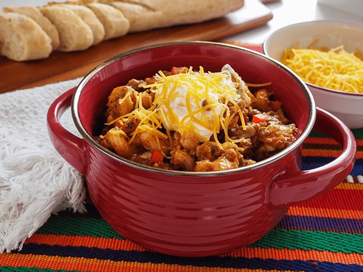

Chili Mac Recipe

Description
This weeknight winner combines classic chili flavor with cheesy pasta for a fun casserole dinner
Home cooks appreciate this recipe's quick preparation and easy clean up on busy days!
Here's what you'll need! (Ingredients)
- 1 pound ground beef or turkey
- 1 medium onion, chopped
- 1 green bell pepper, chopped
- 1 (14.5 ounce) can of Mexican or chili-style stewed tomatoes, undrained
- ½ cup water
- 1 (1.25 ounce) package taco seasoning mix
- 2 cups elbow macaroni or small shells, cooked and drained
- 2 cups Sargento® Shredded Reduced Fat 4 Cheese Mexican Cheese, divided
Home